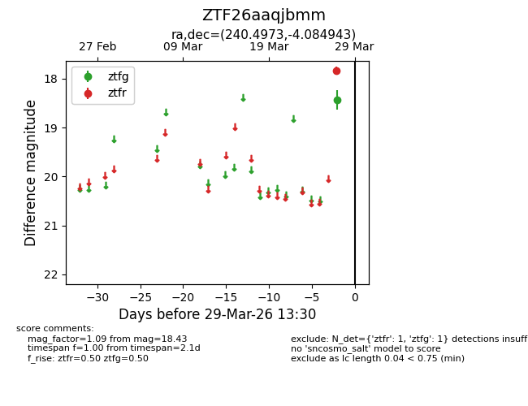
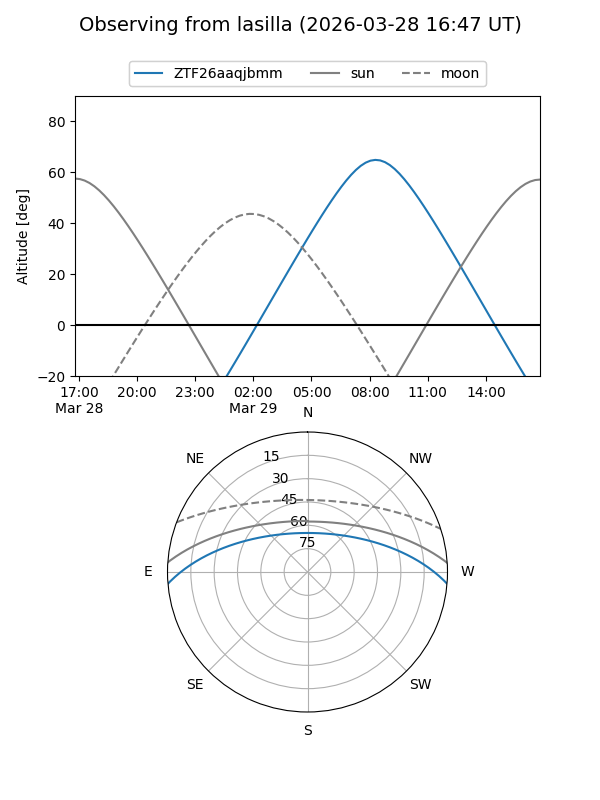
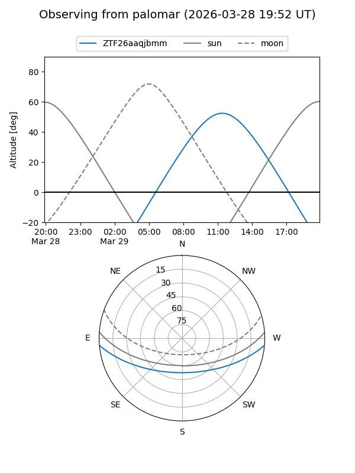

ZTF26aaqjbmm
Target ZTF26aaqjbmm at 2026-03-29 13:33
Aliases and brokers:
FINK: link
Lasair: link
ALeRCE: link
alt names
ZTF26aaqjbmm (ztf,fink_ztf)
Coordinates:
equatorial (ra, dec) = 240.4973,-4.08494
equatorial (HMS+DMS) = 16:01:59.35,-04:05:05.79
galactic (l, b) = (6.2826,+34.44965)
Flags:
Photometry:
last ztfg=18.43, ztfr=17.84
1 ztfg, 1 ztfr detections
Lightcurve

Visibility


Additional plots